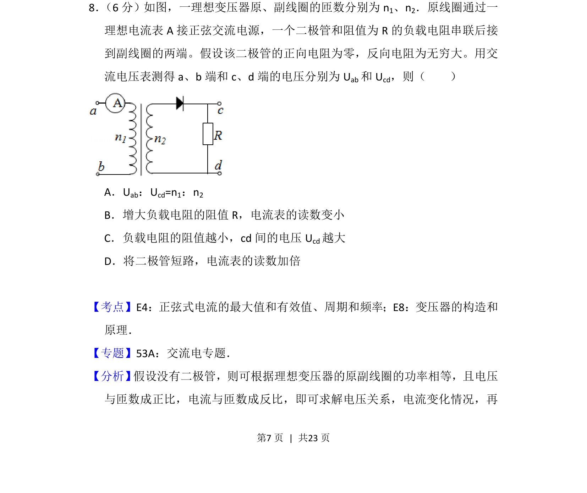
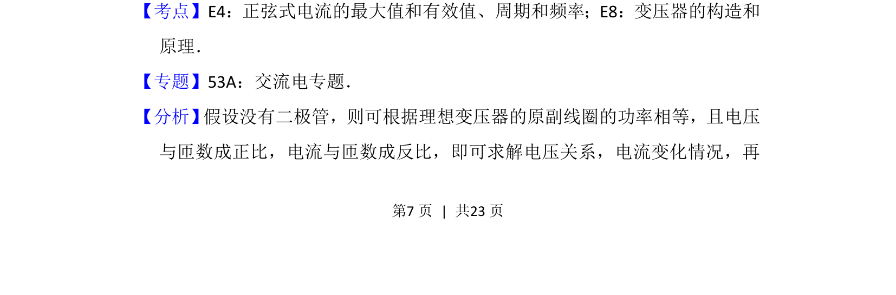
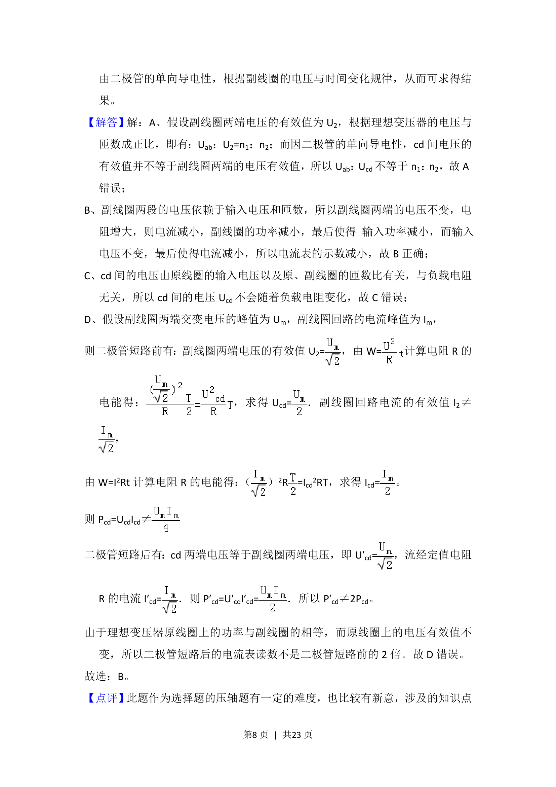
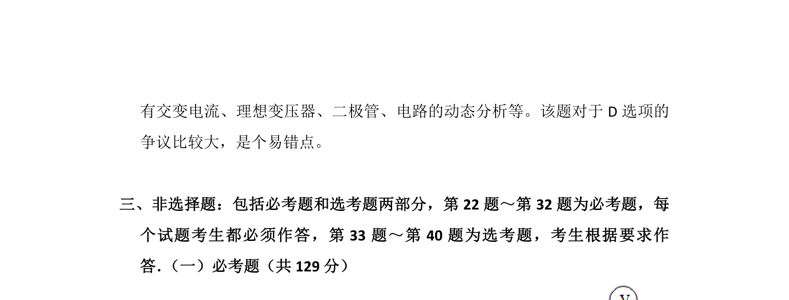

考点：正弦交流电有效值 变压器构造和原理

本题通过理想变压器与副边含二极管的电路，考查交流电有效值及变压器原理的应用。



📄 原 PDF 第 7 页：
素材/真题/吉林/2008-2024·（吉林）物理高考真题/2014年高考物理试卷（新课标Ⅱ）（解析卷）.pdf
8． （6分）如图，一理想变压器原、副线圈的匝数分别为n1、n2．原线圈通过一 理想电流表A接正弦交流电源，一个二极管和阻值为R的负载电阻串联后接 到副线圈的两端。假设该二极管的正向电阻为零，反向电阻为无穷大。用交 流电压表测得a、b端和c、d端的电压分别为U ab和U cd，则（ ） A．Uab：Ucd=n1：n2 B．增大负载电阻的阻值R，电流表的读数变小 C．负载电阻的阻值越小，cd间的电压U cd越大 D．将二极管短路，电流表的读数加倍
【考点】E4：正弦式电流的最大值和有效值、周期和频率；E8：变压器的构造和 原理．菁优网版权所有 【专题】53A：交流电专题． 【分析】 假设没有二极管，则可根据理想变压器的原副线圈的功率相等，且电压 与匝数成正比，电流与匝数成反比，即可求解电压关系，电流变化情况，再